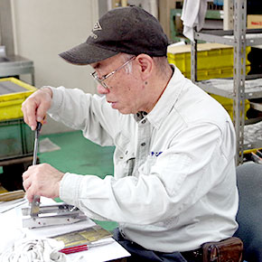
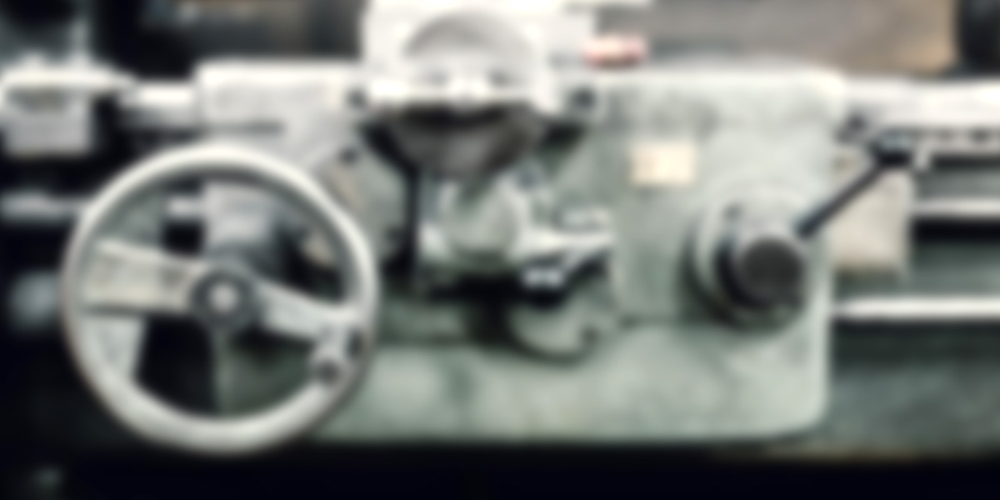
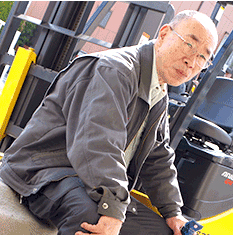

-
十条ステン工業株式会社
長き経験を活かし、若手の技能向上に貢献！！
-
藤井治男
私がヘアーライン加工の仕事を知ったのは、24歳の時、十条ステン工業に、アルバイトとして手伝う事になったのがきっかけです。
- 
仕事内容を教えてください。
研磨作業に入る最終調整作業が主で、組み立てられた製品を、ヘアーライン加工に回す前に、製品の歪んだ歪・傷などの修正が主な作業になります。
仕事への意気込みは？
若い人達に置いていかれない様に...という事が一番になりますが、反対に自分の知っている知識を、若い世代に伝達していこうと思う気持ちが強いです。
今後のビジョン
年齢が年齢なので、ビジョンというものは特にないのが本音ですが、お世話になった会社に、より貢献できることを、今は思い描いて務めております。
求職者へのメッセージをお願いします。
興味がありましたら、是非応募してみて下さい。ただ、直ぐに全ての仕事が出来る事は難しいので、最低でも3～4年は我慢出来る位の信念を持っていないと厳しいかもしれません。ただ、言われた通りに指示を受け、製品をただ作るだけではないという事、そしてゼロから最終工程まで一人でこなせる様になるまでの技術を身に着けて欲しいと思います。そうでなくては、専門職というこの業界に入った意味がないと私は思いますので、覚悟を持って是非チャレンジして欲しいと思います。
どんな人と働きたい？
一緒の職場で働くには、協力し合える方が希望ですね。現在は幸いな事に、従業員が皆そういった考えの方ばかりなので、これからも持続していきたいと思います。
最後に一言
繰り返しになりますが、最終的には自分の手だけで全ての作業が出来る特殊な仕事もあるので、日々充実感が持てる仕事です。技術を習得するまでには数年かかりますが、身に着いた技術は一生ものです。そして働く意欲、働く向上心にも繋がるかと思います。全ては継続が一番大切なので、初心の気持ちを忘れずに挑戦し続けて欲しいと思います。
藤井治男の1日の平均的なスケジュール
- 08:15
-
出社
みんなの元気な顔をまず確認！
- 8：25～8：30
-
ラジオ体操～朝礼
本日の作業目標を発表
- 8:30～12：10
-
午前の部
製品仕上げ工程前の調整作業
- 12:10～13：00
-
昼休み
仲間とのコミュニケーション
- 13：00～18：05
-
午後の部
午前に引き続き、本日の予定目標達成を目指しながら、若手技術指導も行う
- 18：05～18：10
-
一日の作業終了。
社内清掃後、明日の予定・準備を確認。
- 18：15
-
退社
プライベート

Profiel
藤井治男
出身地:東京都出身
平成15年廃業、隠居生活に入る。
隠居生活に入ると同時に町会と消防団に目をつけられる。
平成19年に現会長よりのんびりやればよいから、仕事を手伝えと誘いを受けて入社する。
入社するも担当部署は量産部の為のんびり出来ず、現在は製品の調整部門とコンデンサースポット溶接の指導係を担当。
町会の消防団でも活躍中！
COMMENTS 社員から藤井治男さんへのコメント
(後輩社員：Kより) 60代、団塊の世代で多く苦労を乗り越えてきた大先輩ですのでしっかりと支えていきたいと思います。